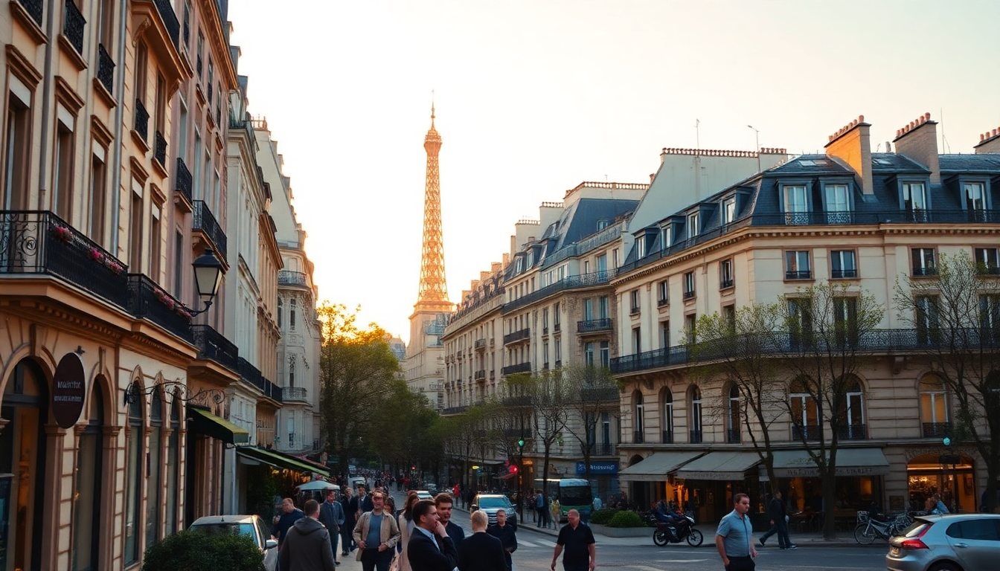

Where to Stay in Paris: Best Neighborhoods for Every Budget

I’ve spent weeks crisscrossing Paris on foot and Metro, testing out different arrondissements to figure out which ones actually deliver value for the price. The short answer: your money goes further in the 10th or 11th than it does in the 1st or 6th, but you trade proximity for character. Below is exactly where I’d book for a return trip, broken down by budget.
What is the best budget neighborhood in Paris?
The 10th arrondissement around Gare de l’Est and Gare du Nord is where I’ve found the most affordable hotels that don’t feel like hostels. It’s not pretty in a postcard sense — think busy streets, kebab shops, and constant construction — but the Canal Saint-Martin stretch changes the vibe entirely. We stayed at Hôtel du Nord near the canal, a no-frills spot with clean rooms and a solid breakfast for €90 a night.
- Hôtel du Nord — basic but clean, canal views from some rooms
- Generator Paris — hostel-style private rooms with a rooftop bar, good for solo travelers
- Le Mareuil — boutique option under €120, close to République
- Canal Saint-Martin area — cheap eats at Chez Prune or grab a picnic from Marché Saint-Quentin
The trade-off: you’ll spend 20 minutes on Metro line 4 or 5 to reach the Louvre or Eiffel Tower. For us, that was fine because we saved enough to eat at Bouillon Julien (classic French, €15 mains) twice.
Where should mid-range travelers stay in Paris?
The Marais (3rd and 4th arrondissements) is the sweet spot for most first-timers who can stretch to €150–€200 a night. It’s central, packed with independent boutiques, and has the best falafel in the city at L’As du Fallafel. We booked a room at Hôtel de la Bretonnerie, a 17th-century building with exposed beams and a tiny courtyard. It’s not fancy, but the location on Rue Vieille du Temple meant we walked to the Pompidou, Notre-Dame, and Place des Vosges in under 15 minutes.
- Hôtel de la Bretonnerie — historic charm, €160/night, book direct for best rate
- Hôtel du Jeu de Paume — pricier but has a spa and rooftop terrace
- Les Bains Paris — converted nightclub, design-forward, €200+
- Rue des Rosiers — the Jewish quarter, best for lunch at L’As du Fallafel (cash only)
- Place des Vosges — perfect for an afternoon stroll, free entry
The Marais gets crowded on weekends, especially around the Picasso Museum. If you want quieter streets but similar prices, try the 9th arrondissement near Rue des Martyrs. We stayed at Hôtel La Nouvelle République there once — cheaper than the Marais, still walkable to Montmartre and Galeries Lafayette.
Is the Latin Quarter worth the money?
Yes, but only if you want to be near the Seine and don’t mind tourist crowds. The 5th arrondissement is classic Paris — narrow streets, bookshops, and the Pantheon looming overhead. We paid €180 a night at Hôtel des Grands Hommes, which faces the Pantheon directly. The rooms are small (typical for Paris), but the view from the top-floor rooms is worth the extra €20.
- Hôtel des Grands Hommes — best location for Sorbonne and Luxembourg Gardens
- Hôtel Minerve — family-run, under €150, near Rue Mouffetard market
- Rue Mouffetard — lively market street, cheap crepes and produce
- Shakespeare and Company — iconic bookstore, arrive before 10am to avoid the queue
- Jardin du Luxembourg — free entry, great for a picnic lunch
Downside: the Latin Quarter is overrun with tourist restaurants serving mediocre food. Avoid anything with a picture menu on Rue de la Huchette. Instead, walk five minutes to Le Petit Fernand on Rue de la Montagne Sainte Geneviève for proper bistro cooking.
What’s the best splurge neighborhood in Paris?
If budget isn’t a concern, the 1st arrondissement around the Louvre or the 6th near Saint-Germain-des-Prés is where you want to be. We spent two nights at Hôtel Louvre Bons Enfants — basic name, but the location on Rue des Bons Enfants puts you a three-minute walk from the Louvre entrance. It’s €250–€300 a night, but you save time and Metro fare.
- Hôtel Louvre Bons Enfants — simple rooms, unbeatable location
- Hôtel Le Bellechasse — boutique near Musée d’Orsay, €350+
- Café de Flore — overpriced coffee but essential for people-watching
- Place Dauphine — quiet square, hidden from tourist traffic
- Pont Neuf — oldest bridge in Paris, great sunset spot
The 1st can feel sterile at night — it’s all luxury shops and closed museums after 8pm. For a livelier splurge, the 6th arrondissement around Rue de Buci has better nightlife and street energy. We had a fantastic dinner at Le Comptoir du Relais, but you need to book a month ahead.
Should I stay in Montmartre?
Montmartre (18th arrondissement) is a love-it-or-hate-it neighborhood. I loved it for the views and village feel, but hated the crowds around Sacré-Cœur. We stayed at Hôtel des Arts Montmartre, a three-star on Rue des Abbesses with a rooftop that looks straight at the basilica. Rooms start around €130, which is reasonable for the area.
- Hôtel des Arts Montmartre — rooftop view, €130–€160
- Le Relais Montmartre — charming, €180, near the funicular
- Sacré-Cœur — free entry, but skip the queue by walking up Rue du Chevalier de la Barre
- Place du Tertre — tourist trap, portrait artists charge €50 for a sketch
- Rue des Abbesses — real local life, bakeries at Au Pain Retrouvé
The biggest issue with Montmartre is the hill. If you’re staying near the top, you’ll climb stairs every time you come home. The Metro station Abbesses has an elevator, but not all exits do. For us, the Sacré-Cœur sunrise walk (empty at 7am) made it worth the leg burn.
What about the 11th or 12th arrondissements?
These are my go-to recommendations for repeat visitors or anyone who wants to live like a local. The 11th around Oberkampf and the 12th near Bastille offer the best food and nightlife for the price. We booked a two-room apartment through Booking in the 11th for €110 a night — twice the space of a Marais hotel for half the cost.
- Le Bistrot Paul Bert — legendary steak frites, €38 for three courses
- Café de l’Industrie — lively bar with great wine list
- Marché d’Aligre — covered market in the 12th, best for cheese and charcuterie
- Place de la Bastille — opera house and weekly flower market
- Promenade Plantée — elevated park, less crowded than the Coulée verte
The 11th is not touristy. You won’t find souvenir shops or English menus. That’s the point. We spent an evening at Le Baron Rouge in the 12th, a wine bar where locals stand at the counter and drink €4 glasses of Beaujolais. No photos, no fuss, just good wine.
FAQ
What is the safest neighborhood in Paris for tourists? The 5th, 6th, and 7th arrondissements have the lowest crime rates and feel safest at night. I’ve walked home from the Latin Quarter to the Marais at midnight without issue. Avoid the area immediately around Gare du Nord after 10pm, and keep your phone in your front pocket on the Metro line 1.
Should I stay in a hotel or an apartment in Paris? For trips longer than four nights, I prefer apartments through Booking or VRBO. You get a kitchen, washing machine, and more space. For short stays, hotels are easier — no check-in codes, no luggage storage worries. In the 11th, we booked an apartment on Rue de la Roquette and loved having a full fridge for breakfast.
Which Paris neighborhood is best for families? The 7th arrondissement near the Eiffel Tower is quiet and has wide sidewalks. Hôtel de l’Alma offers family rooms with two double beds. The 15th is also good — less central but cheaper, with parks like Parc Georges Brassens that have playgrounds and pony rides.
Conclusion
- Budget travelers should book the 10th near Canal Saint-Martin for hotels under €100
- Mid-range visitors get the most value in the Marais (3rd/4th) or the 9th near Rue des Martyrs
- Splurgers should prioritize the 1st or 6th for walkability and classic Paris scenery
- Repeat visitors should try the 11th or 12th for local food and nightlife at half the price
- Montmartre is worth it for the views, but only if you’re okay with hills and crowds